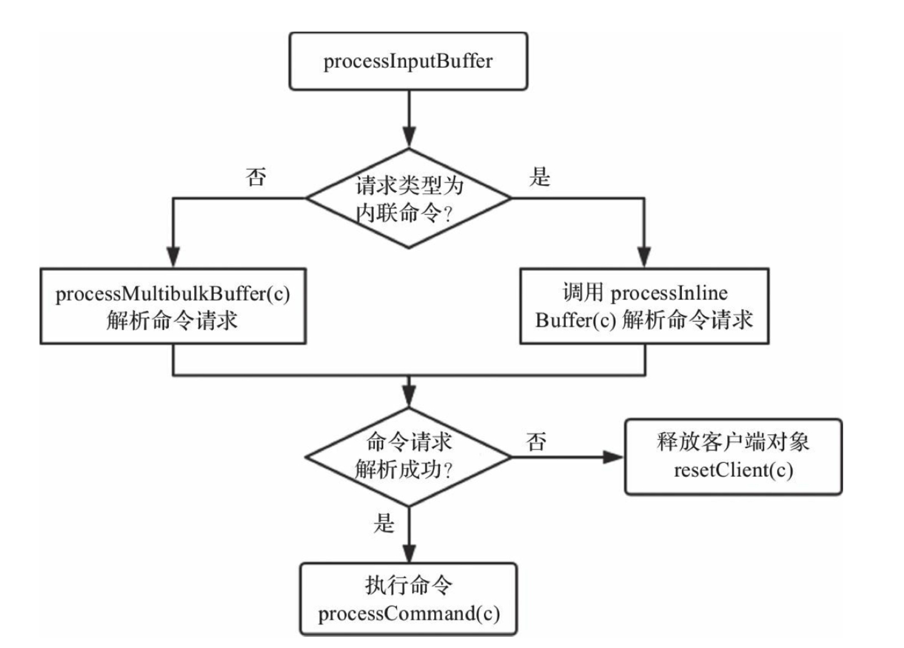

服务器处理客户端命令请求的整个流程，包括服务器启动监听，接收命令请求并解析，执行命令请求，返回命令回复等。
Redis服务器是典型的事件驱动程序，因此事件处理显得尤为重要，而Redis将事件分为两大类：文件事件与时间事件。文件事件即socket的读写事件，时间事件用于处理一些需要周期性执行的定时任务。
1、基本知识
1.1、对象结构体 robj
Redis 是一个 key-value 型数据库， key只能是字符串， vlaue可以是 字符串、列表、集合、有序集合、散列表， 这5中数据类型用结构体 robj表示，robj被称为 Redis 对象。
robj结构体如下所示：
typedef struct redisObject {
unsigned type:4; // 对象类型
unsigned encoding:4; // 对象编码
unsigned lru:LRU_BITS; //缓存淘汰使用, 占24比特
int refcount; //存储当前对象的引用次数，用于实现对象的共享
void *ptr; //指向实际存储的某一种数据结构
} robj;
- 结构体robj的type字段表示对象类型，由 encoding 字段决定。
#define OBJ_STRING 0
#define OBJ_LIST 1
#define OBJ_SET 2
#define OBJ_ZSET 3
#define OBJ_HASH 4
- 结构体 robj 的 encoding
结构体 robj 的 encoding 表示当前对象的底层存储采用的数据结构，即对象的编码。
| 编码常量 |
编码所对应的底层数据结构 |
可存储对象类型 |
| OBJ_ENCODING_INT |
long类型的整数 |
字符串 |
| OBJ_ENCODING_EMBSTR |
embstr编码的简单动态字符串 |
字符串 |
| OBJ_ENCODING_RAW |
简单动态字符串 |
字符串 |
| OBJ_ENCODING_Quicklist |
快速列表 |
列表 |
| OBJ_ENCODING_HT |
字典 |
集合、散列表、有序集合 |
| OBJ_ENCODING_ZIPLIST |
压缩列表 |
散列表、有序集合 |
| OBJ_ENCODING_INTSET |
整数集合 |
集合 |
| OBJ_ENCODING_SKIPLIST |
跳跃表和字典 |
有序集合 |
| OBJ_ENCODING_STREAM |
stream |
stream |
| OBJ_ENCODING_LINKEDLIST |
双端链表(不再使用) |
不再使用 |
| OBJ_ENCODING_ZIPMAP |
未使用 |
未使用 |
结构体 robj 的ptr
ptr是void* 类型的指针，指向实际存储的某一种数据结构。
结构体 robj 的 refcount
refcount 存储当前对象的引用次数，用于实现对象的共享。共享时 refcount加1；删除对象时，refcount减1；当refcount值为0时，释放对象空间。
只有当对象robj存储的是0～10000的整数时，对象robj才会被共享，且这些共享整数对象的引用计数初始化为INT_MAX，保证不会被释放。
结构体 robj 的 lru
用于实现缓存淘汰策略，可以在配置文件中使用maxmemory-policy配置已用内存达到最大内存限制时的缓存淘汰策略。lru根据用户配置的缓存淘汰策略存储不同数据，常用的策略就是LRU与LFU。
LRU的核心思想是，如果数据最近被访问过，那么将来被访问的几率也更高，此时lru字段存储的是对象访问时间；
LFU的核心思想是，如果数据过去被访问多次，那么将来被访问的频率也更高，此时lru字段存储的是上次访问时间与访问次数
lru的低8比特存储的是对象的访问次数，高16比特存储的是对象的上次访问时间。
1.2、客户端结构体 client
Redis是典型的客户端服务器结构，客户端通过socket与服务端建立网络连接并发送命令请求，服务端处理命令请求并回复。Redis使用结构体client存储客户端连接的所有信息，包括但不限于客户端的名称、客户端连接的套接字描述符、客户端当前选择的数据库ID、客户端的输入缓冲区与输出缓冲区等。
typedef struct client {
uint64_t id;
int fd;
redisDb *db;
robj *name;
time_t lastinteraction
sds querybuf;
int argc;
robj **argv;
struct redisCommand *cmd;
list *reply;
unsigned long long reply_bytes;
size_t sentlen;
char buf[PROTO_REPLY_CHUNK_BYTES];
int bufpos;
} client;
typedef struct redisDb {
int id; // id为数据库序号，默认情况下Redis有16个数据库，id序号为0～15。
long long avg_ttl; //avg_ttl存储数据库对象的平均TTL，用于统计
dict *dict; //·dict存储数据库所有键值对。
dict *expires; //·expires存储键的过期时间
// blpop 阻塞列表的时候，会将此列表键记录在blocking_keys，
// 在push的时候，blocking_keys 存在该列表键，则将此列表键记录到字典 ready_keys
dict *blocking_keys;
dict *ready_keys;
dict *watched_keys; //被watch命令监控的所有数据键
} redisDb;
各字段含义如下:
- id为客户端唯一ID，通过全局变量server.next_client_id实现
- fd为客户端socket的文件描述符
- db为客户端使用select命令选择的数据库对象
- name 客户端名称，可以使用命令 client setname 设置
- lastinteraction 客户端上次与服务器交互的时间，以次实现客户端的超时处理。
- querybuf：输入缓冲区，recv函数接收到的客户端命令请求会暂时缓存在此缓冲区
- argc：输入缓冲区的命令请求时按照Redis协议格式编码字符串，需要解析出命令请求的所有参数，参数个数存储在argc字段，参数内容被解析为robj对象，存储在argv数组
- cmd：待执行的客户端命令
- reply：输出链表，存储待返回给客户端的命令回复数据。链表节点存储的值类型为 clientReplyBlock，定义为如下：
typedef struct clientReplyBlock {
size_t size, used;
char buf[];
} clientReplyBlock;
- reply_bytes：表示输出链表中所有节点的存储空间的总和
- sentlen：表示已返回给客户端的字节数
- buf：输出缓冲区，存储待返回给客户端的命令回复数据，bufpos表示输出缓冲区中数据的最大字节位置，sentlen~bufpos区间的数据都是需要返回给客户端的。
1.3、服务端结构体redisServer
结构体redisServer存储Redis服务器的所有信息，包括但不限于数据库、配置参数、命令表、监听端口与地址、客户端列表、若干统计信息、RDB与AOF持久化相关信息、主从复制相关信息、集群相关信息等。
struct redisServer {
// 配置文件绝对路径
char *configfile;
// 数据库的数目,默认16，可通过参数databases配置
int dbnum;
// 数据库数组，数组的每个元素都是redisDb类型
redisDb *db;
//命令字典，redis支持的所有命令都存储在这个字典中，value值为struct redisCommand对象
dict *commands;
// redis的事件循环，类型为aeEventLoop
aeEventLoop *el;
// 服务器监听端口号，默认端口号 6379
int port;
//绑定的所有IP地址，可以通过参数bind配置多个
char *bindaddr[CONFIG_BINDADDR_MAX];
// 用户配置的IP地址数目
int bindaddr_count;
//针对bindaddr字段的所有IP地址创建的socket文件描述符
int ipfd[CONFIG_BINDADDR_MAX];
//创建的socket文件描述符数目
int ipfd_count;
//当前连接到Redis服务器的所有客户端
list *clients;
//最大空闲时间，可通过参数timeout配置
int maxidletime;
}
1.4、命令结构体 redisCommond
Redis支持的所有命令初始都存储在全局变量redisCommandTable，类型为redisCommand，结构体redisCommand相对简单，主要定义了命令的名称、命令处理函数以及命令标志等
struct redisCommand {
//命令名称
char *name;
//命令处理函数
redisCommandProc *proc;
//命令参数数目,用于校验命令请求格式是否正确
int arity;
//命令标志，例如标识命令时读命令还是写命令
char *sflags;
//命令的二进制标志，服务器启动时解析sflags字段生成。
int flags;
// calls :从服务器启动至今命令执行的次数，用于统计。
// 从服务器启动至今命令总的执行时间，microseconds/calls即可计算出该命令的平均处理时间，用于统计
long long microseconds, calls;
};
1.5、事件处理
Redis服务器是典型的事件驱动程序，而事件又分为 文件事件（socket的可读可写事件） 与 时间事件（定时任务） 两大类。无论是文件事件还是时间事件都封装在结构体aeEventLoop中：
typedef struct aeEventLoop {
//事件循环是否结束
int stop;
//为文件事件数组，存储已经注册的文件事件
aeFileEvent *events;
//存储被触发的文件事件
aeFiredEvent *fired;
//多个时间事件形成链表，timeEventHead即为时间事件链表头节点
aeTimeEvent *timeEventHead;
// Redis底层可以使用4种 I/O 多路复用模型（kqueue、epoll等），apidata是对这4种模型的进一步封装。
void *apidata
//Redis服务器需要阻塞等待文件事件的发生，进程阻塞之前会调用beforesleep函数，
//进程因为某种原因被唤醒之后会调用aftersleep函数
aeBeforeSleepProc *beforesleep;
aeBeforeSleepProc *aftersleep;
} aeEventLoop;
Redis有多个定时任务，因此理论上应该有多个时间事件，多个时间事件形成链表，timeEventHead即为时间事件链表头节点；
Redis服务器需要阻塞等待文件事件的发生，进程阻塞之前会调用beforesleep函数，进程因为某种原因被唤醒之后会调用aftersleep函数。
函数beforesleep会执行一些不是很费时的操作，如：集群相关操作、过期键删除操作（这里可称为快速过期键删除）、向客户端返回命令回复等。
比如Redis过期键删除操作，它有两种策略：①访问数据库键时，校验该键是否过期，如果过期则删除；②周期性删除过期键，beforeSleep函数与serverCron函数都会执行
事件驱动程序通常在server 启动过程的最后一步开启事件循环，之后只需等待事件发生处理文件事件和时间事件即可。
1.5.1、文件事件
Redis客户端通过TCP socket与服务端交互，文件事件指的就是socket的可读可写事件。socket读写操作有阻塞与非阻塞之分。
采用阻塞模式时，一个进程只能处理一条网络连接的读写事件，为了同时处理多条网络连接，通常会采用多线程或者多进程，效率低下；非阻塞模式下，可以使用目前比较成熟的I/O多路复用模型，如select/epoll/kqueue等，视不同操作系统而定。
epoll是Linux内核为处理大量并发网络连接而提出的解决方案，能显著提升系统CPU利用率。
Redis并没有直接使用epoll提供的API，而是同时支持4种I/O多路复用模型，并将这些模型的API进一步统一封装。
Redis在编译阶段，会检查操作系统支持的I/O多路复用模型，并按照一定规则决定使用哪种模型。
1.5.2、时间事件
通过文件事件一节可以知道，事件循环执行函数aeProcessEvents的主要逻辑：①查找最早会发生的时间事件，计算超时时间；②阻塞等待文件事件的产生；③处理文件事件；④处理时间事件。时间事件的执行函数为processTimeEvents。
Redis服务器内部有很多定时任务需要执行，定时任务被封装为时间事件aeTimeEvent对象，多个时间事件形成链表，存储在aeEventLoop结构体的timeEventHead字段，它指向链表首节点。
typedef struct aeTimeEvent {
//时间事件唯一ID，通过字段eventLoop->timeEventNextId实现
long long id;
//时间事件触发的秒数与毫秒数
long when_sec;
long when_ms;
//函数指针，指向时间事件处理函数
aeTimeProc *timeProc;
//函数指针，删除时间事件节点之前会调用此函数
aeEventFinalizerProc *finalizerProc;
//指向对应的客户端对象
void *clientData;
//指向下一个时间事件节点
struct aeTimeEvent *next;
} aeTimeEvent;
函数serverCron实现了Redis服务器所有定时任务的周期执行。serverCron函数的执行时间不能过长，否则会导致服务器不能及时响应客户端的命令请求。
2、server启动过程
Redis服务器的启动过程，主要分为server初始化，监听端口以及等待命令3节。
服务器初始化主流程可以简要分为7个步骤：
①初始化配置，给配置参数赋初始值，包括用户可配置的参数，以及命令表的初始化；
②加载并解析配置文件；
③初始化服务端内部变量，比如客户端链表、数据库、全局变量和共享对象等；
④创建事件循环eventLoop，即分配结构体所需内存，并初始化结构体各字段；epoll就是在此时创建的；
⑤创建socket并启动监听，所有创建的socket都会设置为非阻塞模式，原因在于Redis 使用了IO多路复用模式，其要求socket读写必须是非阻塞的，用户可通过指令port配置socket绑定端口号，指令bind配置socket 绑定IP地址；；
⑥创建文件事件与时间事件；
⑦开启事件循环，等待文件时间和时间事件发生即可。
void aeMain(aeEventLoop *eventLoop) {
eventLoop->stop = 0; //开始事件循环
while (!eventLoop->stop) {
if (eventLoop->beforesleep != NULL)
eventLoop->beforesleep(eventLoop); //事件处理主函数
aeProcessEvents(eventLoop, AE_ALL_EVENTS|AE_CALL_AFTER_SLEEP);
}
}
int aeProcessEvents(aeEventLoop *eventLoop, int flags) {
shortest = aeSearchNearestTimer(eventLoop);
long long ms = shortest->when_sec - now_sec)*1000 + shortest->when_ms - now_ms;
…………
//阻塞等待文件事件发生
numevents = aeApiPoll(eventLoop, tvp);
for (j = 0; j < numevents; j++) {
aeFileEvent *fe = &eventLoop->events[eventLoop->fired[j].fd];
//处理文件事件，即根据类型执行rfileProc或wfileProc
}
//处理时间事件
processed += processTimeEvents(eventLoop);
}
Redis过期键删除有两种策略：①访问数据库键时，校验该键是否过期，如果过期则删除；②周期性删除过期键，beforeSleep函数与serverCron函数都会执行。
TCP是基于字节流的可靠传输层协议，为了提升网络利用率，一般默认都会开启Nagle。当应用层调用write函数发送数据时，TCP并不一定会立刻将数据发送出去，根据Nagle算法，还必须满足一定条件才行。
Nagle是这样规定的：如果数据包长度大于一定门限时，则立即发送；如果数据包中含有FIN（表示断开TCP链接）字段，则立即发送；如果当前设置了TCP_NODELAY选项，则立即发送；如果以上所有条件都不满足，则默认需要等待200毫秒超时后才会发送。
TCP是可靠的传输层协议，但每次都需要经历“三次握手”与“四次挥手”，为了提升效率，可以设置SO_KEEPALIVE，即TCP长连接，这样TCP传输层会定时发送心跳包确认该连接的可靠性。
3、命令处理过程
命令的处理过程，此过程分为3个阶段：解析命令请求、调用命令和返回结果给客户端。
3.1命令解析
TCP是一种基于字节流的传输层通信协议，因此接收到的TCP数据不一定是一个完整的数据包，其有可能是多个数据包的组合，也有可能是某一个数据包的部分，这种现象被称为半包与粘包。
为了区分一个完整的数据包，通常有如下3种方法：①数据包长度固定；②通过特定的分隔符区分，比如HTTP协议就是通过换行符区分的；③通过在数据包头部设置长度字段区分数据包长度，比如FastCGI协议。
Redis 使用自定义格式区分不同的命令，客户端会对命令请求转换为如下的协议格式，其中换行符\r\n用于区分命令请求的若干参数，“*3”表示该命令请求有3个参数，“$3”“$9” 和 “$6” 等表示该参数字符串长度。
SET redis-key value1
被翻译为如下结构
*3\r\n$3\r\nSET\r\n$9\r\nredis-key\r\n$6\r\nvalue1\r\n
Redis服务器接收到的命令请求首先存储在客户端对象的querybuf 输入缓冲区，然后解析命令请求各个参数，并存储在客户端对象的argv（参数对象数组）和argc（参数数目）字段。
客户端命令请求的入口函数为readQueryFromClient，会读取socket数据存储到客户端对象的输入缓冲区，并调用函数processInputBuffer解析命令请求。

3.2、命令调用